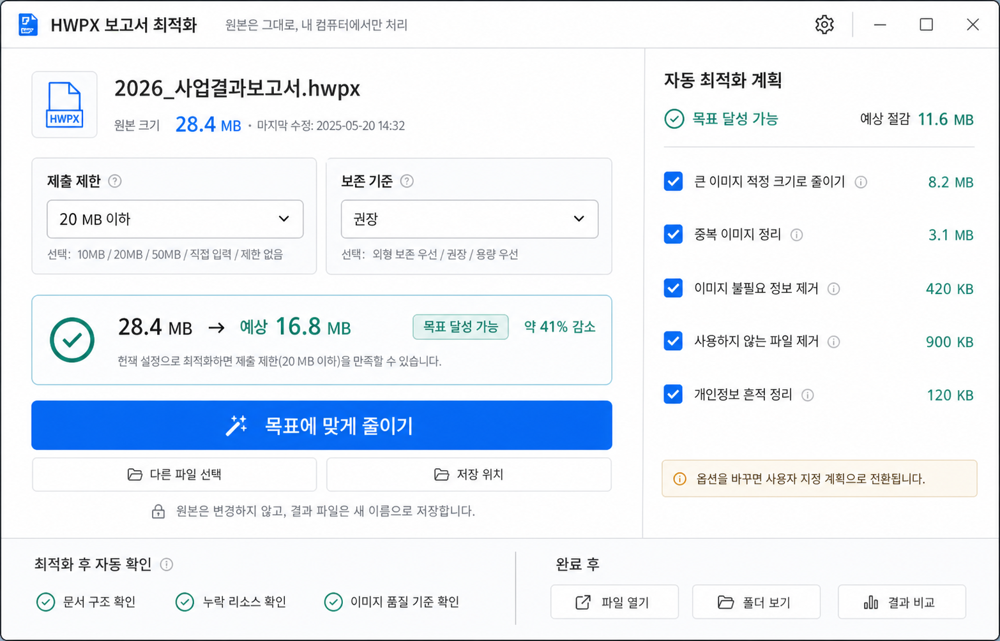

최적화 모드를 전면에서 빼고, 담당자가 실제로 정하는 “제출 제한”과 “보존 기준”을 중심으로 재구성했습니다.

제출 제한은 결과 조건, 보존 기준은 허용 강도, 자동 최적화 계획은 실제 작업 목록입니다. 이 구조면 “제출용 모드”와 “20MB 이하”가 중복되지 않습니다.
사용자가 오른쪽 옵션을 직접 바꾸면 “사용자 지정 계획”으로 전환되는 방식이 자연스럽습니다.